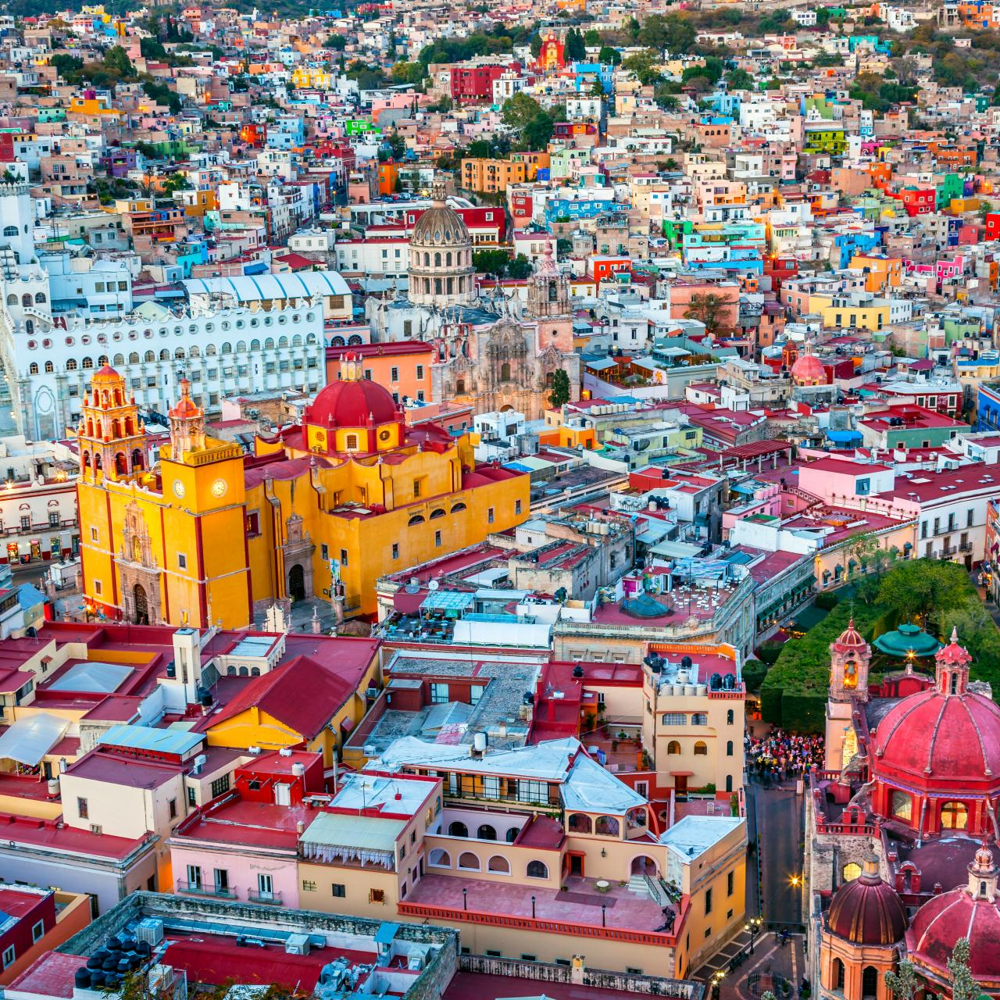

Location: Chiangmai, Thailand

Geographical Location: Asia
Chiang Mai, nestled in the lush hills of northern Thailand, is a city that captivates with its unique blend of cultural richness and natural beauty. Situated approximately 700 kilometers north of Bangkok, Chiang Mai is the largest city in the region and serves as the capital of the province of the same name. Its geographical location is nothing short of enchanting, surrounded by forested mountains and picturesque landscapes. This charming city, often referred to as the "Rose of the North," offers visitors a delightful escape from the bustling urban life, inviting them to explore a realm where tradition meets modernity amidst a backdrop of stunning scenery.
The heart of Chiang Mai beats with a rich history that dates back over 700 years. Founded in 1296, the city was originally the capital of the ancient Lanna Kingdom. Today, remnants of its storied past are scattered throughout the city, from the ancient temples that dot the landscape to the preserved city walls and moats that harken back to a bygone era. Among the city's treasures is the revered Wat Phra Singh, a 14th-century temple known for its intricate architecture and revered Buddha image. Chiang Mai's historical sites provide a captivating glimpse into its heritage, making it a destination that seamlessly weaves together the past and present for visitors to explore and appreciate.
Photo Gallery

You can see hot balloons in Chiang Mai as well.

You can see cute elephants in Chiang Mai! Isn’t that fun?!

There are so many beautiful temples in Chiang Mai.

Be respectful to the monks.

And don’t forget to treat yourself with delicious Thai food!
Location: Guanajuato, Mexico
Geographical Location: North America
As the sun dips low in the sky, Guanajuato, the vibrant small town in Mexico, unfolds a spectacular tableau of hues and shadows that bewitch every onlooker. The historic town, celebrated as the backdrop for the acclaimed animation "Coco," transforms into a realm of dreams. Its vividly painted houses, basking in the warm golden glow of the evening sun, offer a picturesque sight that resonates deeply with the joyous and spirited theme of the beloved movie.
Guanajuato at twilight is a painting that comes to life, a perfect blend of reality and the fantastic world depicted in "Coco." The array of colors presented by the quaint houses form a harmonious canvas that radiates a tranquil yet vibrant energy as the day transitions to night. This little town, full of life and color, offers a surreal experience, inviting dreamers and artists alike to immerse themselves in its poetic scenery, alive with stories and rich cultural tapestry.
Photo Gallery

The Mexico Plaza teems with vibrant life as locals and visitors alike gather amidst historic architecture

Teotihuacan mesmerizes with its immense pyramids, tracing back to a pre-Aztec civilization steeped in mystery..
Location: Monteverde, Costa Rica

Geographical Location: South America
Monteverde, Costa Rica is situated 4,662 feet above sea level. Monteverde’s famed cloud forests are the byproduct of fog (a thick, low-hanging cloud) tangling amongst the leaves and branches of the forest canopy. Trails and hanging bridges offer a close-up view of the diverse variety of animals and plants living in the forest.
One of the main tourist locations in Monteverde is the town of Santa Elena, which is not only home to a variety of restaurants with delicious food, but a serpentarium as well. You can enjoy hiking, ziplining, and observing the native wildlife while staying in Monteverde. It’s a truly beautiful place.
Photo Gallery

You can hike trails and zipline through the Monteverde cloud forests.

Hanging bridges over the cloud forests allow for a birds-eye view.

You can visit hummingbirds at Monteverde’s Selvatura Park’s hummingbird garden, which exhibits over 14 different species of hummingbird.

El Tigre Waterfalls is made up of four falls, which are connected by trails and hanging bridges.